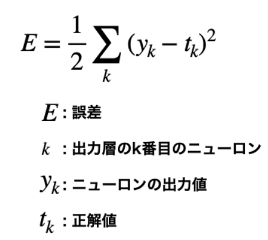

機械学習では，訓練データとテストデータの2つのデータに分けて，学習や実験を行うのが一般的です。この場合，まずは訓練データだけを使って学習を行い最適なパラメータを探索します。そして，テストデータを使って，その訓練したモデルの実力を評価します。訓練データとテストデータを分ける理由はモデルに汎用的な能力を持たせるためです。この汎化能力を正しく評価したいために，訓練データとテストデータを分離する必要があります。なお，訓練データは教師データと呼ぶ場合もあります。汎化能力とは，まだ見ぬデータ(訓練データに含まれないデータ)に対しての能力であり，この汎化能力を獲得することこそが機械学習の最終的な目標です。ちなみに，特定のデータだけに対応した状態を過学習(overfitting)と言います。過学習を避けることは，機械学習の重要な課題でもあります。
ニューラルネットワークの学習では，ある「ひとつの指標」によって現在の状態を表します。そして，その指標を基準として，最適な重みパラメータの探索を行うのです。ニューラルネットワークの学習で用いられる指標は「損失関数」と呼ばれます。損失関数として用いられる関数はいくつかありますが，最も有名なものは「2乗和誤差(mean squared error)」です。この2乗和誤差は以下の数式によって与えられます。
